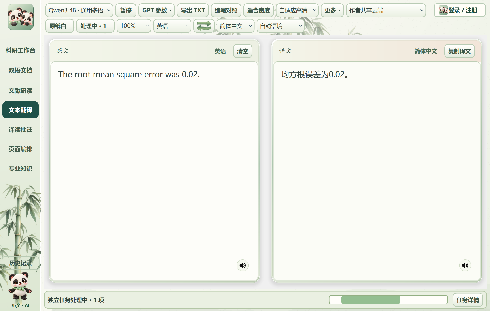

1.43.28 实机验收
1.43.28 实际安装测试
| 实际测试 | 完成页数 | 回填/应译区域 | PDF阻断问题 | 耗时（分钟） |
|---|---|---|---|---|
| 8页新文档，无既有译文 | 8/8 | 114/114 | 0 | 7.48 |
| 12页原问题文档，真实缓存复检 | 12/12 | 168/168 | 0 | 12.74 |
本机 Qwen3 4B 真实推理。第一篇无该文献既有译文且启动前缓存为空；第二篇复检真实旧缓存。两篇均完成，原件保持原样；耗时仅对应这些样本。
5,028 个生产文件实际安装后逐一相同；244 个应用模块和182个 BabelDOC 模块与冻结源码一致。13组功能回归、40项专门规则回归通过。两次实际文档进程均正常退出。
原始实机截图

自有示例文本，独立实际安装，真实本地推理。私人论文不公开；结构完整性检查之外仍需科学语义核读。